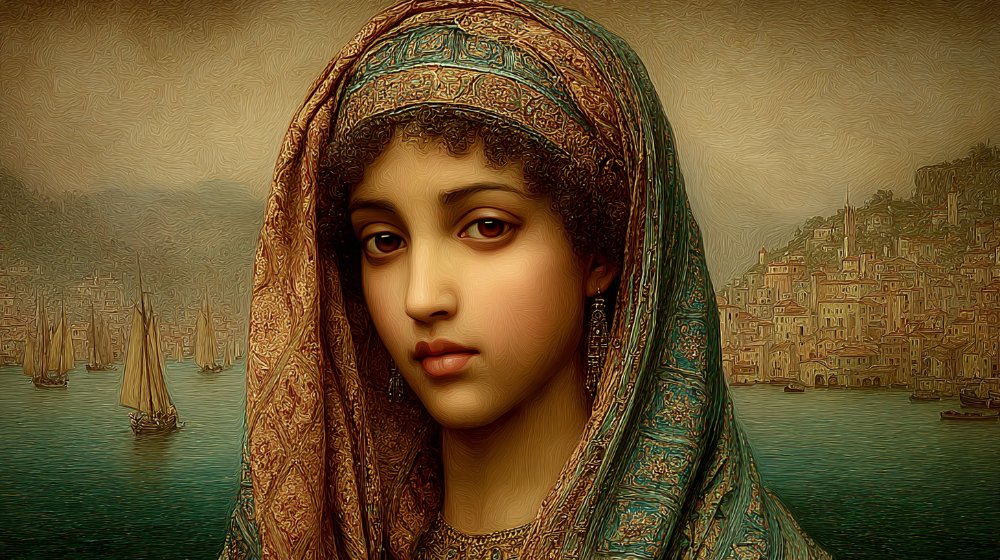

Maga of Storms — The Eye of the Hurricane — Exile Twice Over
"When she casts weather magic, observers genuinely cannot tell whether she is shaping the storm or the storm is expressing her."

Khalida bint Tariq al-Balansiyya was born in 1171 in Valencia, under the Almohad Caliphate, to a moderately prosperous family with connections to the scholarly circles of Al-Andalus. Her Gift manifested around age six — early enough to make childhood frightening, late enough that her family had already noticed what they had. They sought help through the networks they knew. That search led them, eventually, to Al-Quṣṣāṣ.
Al-Quṣṣāṣ — "The Storytellers" — was founded in 1029 as a deliberate experiment in cross-cultural magical synthesis, housing primarily Order of Suleiman magi alongside Hermetic "houseguests" held for diplomatic purposes. It was everything the Almohad orthodoxy was not: tolerant, synthetic, intellectually promiscuous. Khalida arrived at age eight and received an education divided between two traditions and, ultimately, two worlds.
Her parens was Rodrigo de Tarsus, a Flambeau Orator from the Iberian Tribunal, technically a "houseguest" — the polite fiction for a prisoner exchange — who recognised in his young student the possibility of someone who could bridge both magical traditions naturally. From Rodrigo she received Hermetic theory and the Orator's emphasis on magic as a facilitator of communication rather than a destroyer. From the Order of Suleiman magi she received Arabic astronomical weather-prediction, Avicenna, and the theological universalism that would later develop into genuine Sufism.
In 1192-3, a visiting Bonisagus magus — using his House's elevated status and magic to seal and silence a room — attempted to assault Khalida, then an apprentice of approximately seventeen. She killed him with The Kiss of Death (PeCo 45), a spell Rodrigo had taught her precisely because conventional protection had already failed multiple times in the covenant's diplomatic environment. The magical evidence was unambiguous. Rodrigo asserted her right to self-defence immediately and held that position under significant political pressure. He was correct under the Code. This is recorded here as fact, not apology.
The political consequences proved devastating. House Bonisagus could not openly punish Al-Quṣṣāṣ without acknowledging what their magus had done, so the destruction was indirect: information leaked to Almohad religious authorities, trade relationships undermined, diplomatic neutrality eroded through scholarly networks. By 1202, what political pressure could not accomplish immediately, the Almohad Caliphate's increasing religious rigidity completed. The covenant dissolved. Khalida took several books and fled east.
She traveled through North Africa and Mediterranean ports, working passage on ships using the astronomical navigation knowledge Al-Quṣṣāṣ had given her, and arrived in Constantinople in 1203, where Solving Epicurusson had already settled and had been inviting her to join him.
In April 1204, Solving experienced a premonition of catastrophe and insisted they leave immediately. Khalida, whose Sufism recognised genuine mystical insight and whose experience had taught her that impossible disasters are possible, believed him. They fled during the early stages of the Fourth Crusade's sack of Constantinople. This was her second home destroyed, her second forced exile, the second time everything collapsed into violence around her.
She survived Al-Quṣṣāṣ because Rodrigo defended her. She survived Constantinople because Solving warned her. She has noted, without particular bitterness, that her continued existence has depended heavily on men willing to stake something on her behalf — and that she intends, eventually, to stop needing them to. — Internal note, Sjórseiðr archive
She passed her gauntlet in 1194, becoming a full maga of House Flambeau. By 1205, she is one of three founding members of Sjórseiðr — a covenant built on mobility, which suits her perfectly, since everything stationary has eventually been taken from her.
Exceptional stamina relative to her lean build — this is the constitution of someone who has endured Painful Magic for twenty years and developed a functional relationship with sustained suffering. Her Quickness and Perception reflect her restless alertness; she is always reading the room, calculating exits, noting changes in wind. Communication at −1 is interesting for an Orator by tradition: she persuades through intensity and precision rather than through charm, and she has no patience for diplomatic indirection once she considers a matter settled.
Five feet two inches, wiry and lean with the rangy build of someone who forgets to eat when absorbed in work. Olive-toned skin weathered by maritime travel. Her hands bear the precise scars of laboratory accidents and surgical training. Sharp amber-brown eyes that constantly assess and calculate, rarely at rest, telegraphing her emotional weather to those who have learned to read the gathering storms before she speaks.
Angular rather than soft — fine-boned but intense, full lips usually pressed in concentration or guarded neutrality. Black curly hair escapes periodically from beneath ornate headscarves in jewel tones of teal, gold, and rust, their geometric patterns marking both Valencian heritage and personal aesthetic. She dresses in layered robes that allow movement for spellcasting and ship work — practical but deliberately Moorish in cut and colour. Minimal jewellery: simple silver earrings, occasionally a pendant, nothing that interferes with prayer or work.
The following traits are drawn from the character biography. They are not recorded as formal Foundry items on the character sheet.
Tempestuous +3: Intensely emotional, quick to anger, capable of sudden calm. Her moods move like weather patterns — colleagues learn to read the gathering pressure before the break. This is not volatility for its own sake; it is a highly responsive system that registers genuine things intensely. When the storm breaks, it is usually about something that deserves it.
Restless +2: She sees herself as wind. Home has been taken twice; she has stopped trying to build one in the conventional sense. This manifests as physical restlessness, difficulty with long-term commitments, and a constant low-level readiness to flee that has proven repeatedly adaptive. Sjórseiðr's mobile structure is not merely convenient — it is the first covenant form she has encountered that does not feel like a trap.
Self-Protective −2: Negatively scored — she is reckless with her own safety in inverse proportion to how fiercely she protects others. Protection failed twice; she has stopped organising her decisions around self-preservation. She will endure Painful Magic's suffering without complaint, walk into danger without hesitation. This is not suicidal — she wants to live — but she has stopped trying to make herself safe and started accepting that she may not be.
* Perdo effective score 9 = base 6 + 3 from Puissant Perdo (Puissant Art adds +3 to all totals using that Art).
Perdo dominates, as might be expected — Rodrigo's Flambeau training and, one suspects, a certain aptitude sharpened by experience. Auram at 7 represents her primary developing specialisation: weather magic is where her astronomical knowledge, her Painful Magic restraint, and her tempestuous personality all converge into something genuinely formidable. Vim at 7 is the theoretical substrate — she understands how magic works. The breadth across other Forms reflects Al-Quṣṣāṣ's ecumenical library rather than focused development. Her current repertoire is combat-anchored; her future trajectory is maritime weather. She is aware of the gap and working to close it.
[+2] = Puissant Finesse bonus applies when the ability is used; base score is 0.
Medicine 4 with Affinity (reduced XP cost) and Cautious with Medicine (no botches on Medicine rolls) makes her a genuinely skilled practitioner — well above what most Hermetic magi achieve, and comparable to dedicated mundane physicians. She can diagnose, perform surgery, and apply both Arabic and Latin medical theory. Companions and sailors come to her; she does not turn them away. This creates obligations and relationships that extend well beyond her official Hermetic duties.
A small, carefully chosen repertoire shaped entirely by her constraints: Painful Magic rewards devastating single effects over multiple smaller ones; Slow Caster means she must commit before the target has fully revealed itself. Everything she has learned to cast, she has learned to make count. The repertoire is currently weighted toward combat and destruction — Rodrigo's legacy. The maritime expansion is still in development.
She has identified the gaps in her repertoire and is actively working to fill them. Priority targets for laboratory seasons ahead: Sailor's Foretaste of the Morrow (weather prediction); extended-duration wind control for navigation; ship-protection wards against lightning and storm; and flight magic. She approaches this development with the same methodical rigour she applies to medicine — catalogue the need, identify the solution, build toward it.
Khalida is a practising Sufi Muslim with True Faith — the mechanical reality matching the personal one. She performs salat five times daily, maintains dietary restrictions, and integrates her understanding of Allah into her magical practice at a level of sincerity that most Hermetic magi find either admirable or bewildering.
Her theology is heterodox by both Islamic and Christian standards: she believes Allah and God refer to the same Divine creator, that Islam and Christianity are different paths toward the same truth, and that theological differences dissolve under deeper understanding. This universalism was instilled at Al-Quṣṣāṣ and confirmed by direct mystical experience during her Sufi practice. Orthodoxy, from either direction, destroyed her home. Direct experience and rational investigation are her authorities now.
Weather is not random. Weather is divine expression that I have learned to understand, and — God willing, with humility — to humbly guide. When I am in a storm, I am not fighting the Divine. I am reading it. — Khalida bint Tariq, in conversation with Solving Epicurusson, c. 1203
The Gift, in her understanding, is divine providence — a capacity given to her for purposes she does not fully comprehend yet. Hermetic theory is natural philosophy: a systematic investigation of God's creation. Her magic is not separate from her faith but continuous with it. The Orator tradition's emphasis on communication over destruction fits this framework precisely — even when she destroys, she prefers to understand what she is destroying first.
Her True Faith (score 1) provides divine protection against supernatural threats. It does not suppress her Gift — this is theologically unusual, since the Dominion generally weakens Hermetic magic, but True Faith operates differently from the passive Dominion aura. She navigates this carefully, maintaining separation between prayer spaces and laboratory work without any sense that the two are in conflict. They are not, in her understanding. They are the same project at different scales.
Rodrigo defended her before a Tribunal that wanted her punished, at cost to his own already-marginal position. He stood between her and the political machinery of House Bonisagus, knowing the machinery would eventually prevail, and stood there anyway. When Al-Quṣṣāṣ collapsed, he disappeared. She does not know whether he escaped, was exchanged again, or died in the dissolution. She has not tried to find out — uncertainty is agonising but preferable to confirmation of the alternative. Finding him alive would be the best news she could receive. Finding him dead would require a reckoning she is not ready for.
He is the only person she has encountered whose intellectual respect for her is entirely uncomplicated by attraction, competition, or condescension. He sees her as a colleague and debates her as an equal. His Criamon weirdness, far from being an obstacle, makes him easy to be around — he is not fazed by intensity, is genuinely interested in her faith, and does not require her to be different than she is. She does not fully understand his mysticism, but she trusts his sincerity. When he insists on something irrational and urgent, she believes him. This has saved her life.
She is not invested in his specific vision of the North Sea vis source — that is his quest, shaped by his Enigmatic framework. But she will help him pursue it because they are bound by mutual debt and genuine friendship, and because if his obsession brings disaster (as obsessions tend to), she intends to be positioned to protect him from the fallout.
Their relationship is in early stages — two strong personalities who have not yet fully mapped each other. Khalida respects Astrid's maritime expertise and her directness. She suspects Astrid's history has given her a similar relationship with safety and vulnerability, though the specifics differ. They have not had this conversation. They may eventually.
Her informal mentor and protector at Al-Quṣṣāṣ, who taught her weather-prediction techniques and astronomy. An older man who took her education seriously. Almost certainly dead or displaced. Could resurface as an ally, a ghost, or a source of news about what happened to others she knew.
Khalida's formal role in Sjórseiðr is still being defined, but the outline is clear: she will be the fleet's weather specialist and magical reconnaissance scout. The theoretical foundation already exists — years of astronomical weather prediction, Avicennan cosmology explaining weather as celestial influence mediated through terrestrial conditions, and Magic Sensitivity 5 that can detect ephemeral auras, transient regiones, and magical phenomena that appear and vanish with specific tidal and celestial conditions. What she lacks is the practical spell repertoire for maritime work, and she is actively building it.
The combination that makes her particularly valuable: she can predict, from astronomical and weather-pattern analysis, when and where ephemeral magical phenomena will appear — then detect and navigate to them in real time. This transforms her from passive sensor to active resource scout. "The convergence of storm, full moon, and spring tide will create a temporary regio at these coordinates in three days" — this is the kind of intelligence that a mobile covenant like Sjórseiðr needs and that a fixed covenant cannot easily provide.
Score 4 allows passive detection of auras (Ease Factor 9 for level 3, 6 for level 6) and active sensing of regio boundaries, magical creatures, and enchanted objects. The maritime environment — where magical phenomena are notoriously transient and location-dependent — makes this ability far more valuable than in a stable land-based context. The trade-off is −4 to Magic Resistance while the ability is active. She accepts this trade-off. Given the choice between perceiving more and being more armoured, she consistently prefers to perceive.
Khalida bint Tariq is a maga of considerable theoretical depth and carefully rationed practical power, operating under constraints that have shaped her into something more disciplined and precise than unconstrained development would have produced. Painful Magic and Slow Caster, which sound like simple penalties, have instead produced a practitioner who never wastes a casting, who understands the body with surgeon's precision because she has had to understand her own pain with the same rigour, and who hits hard the one time she commits because she cannot afford not to.
She is also, at 34, still becoming. Her maritime specialisation is in active development. Her religious practice is still integrating with her Hermetic work. Her relationships are newly formed. The two destructions she has survived have not broken her — they have stripped away everything she didn't absolutely need, leaving something leaner and more essential.
Not to be trapped again. To develop her maritime capabilities to the point where she is genuinely indispensable to the fleet, not merely present. To find the eye of the hurricane — the stillness at the centre of being tempestuous — that Sufi practice tells her is available even to people like her. To know, eventually, what happened to Rodrigo.
She does not have Solving's grand vision or Astrid's specific expertise. She has herself — which is, given what she has survived, considerable.
The storm does not ask for your permission. You learn to stand within it, or you are swept away. I have been swept away twice. The third time, I intend to be the one doing the sweeping. — Khalida bint Tariq; undated; recorded by Solving Epicurusson
This dossier is maintained in the personal records of the Sjórseiðr covenant. It reflects the founding year's understanding and should be updated following any significant development regarding Al-Quṣṣāṣ survivors, the Iberian Tribunal's political situation, or the subject's maritime spell development. Solving Epicurusson reviewed this assessment. He objects to the phrase "leaner and more essential" as reductive. He is not wrong. It stands.